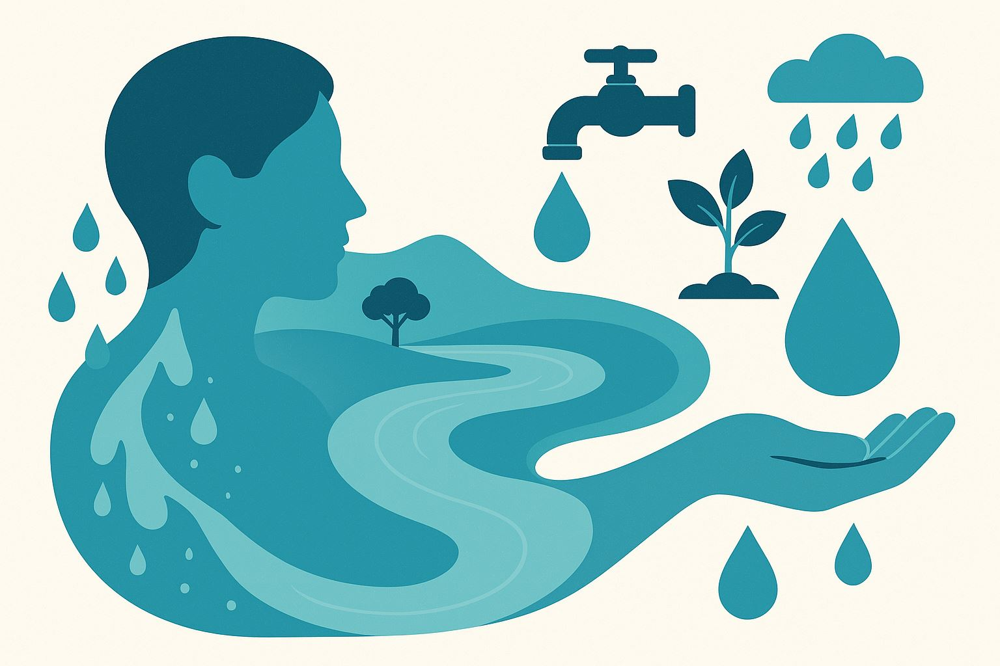
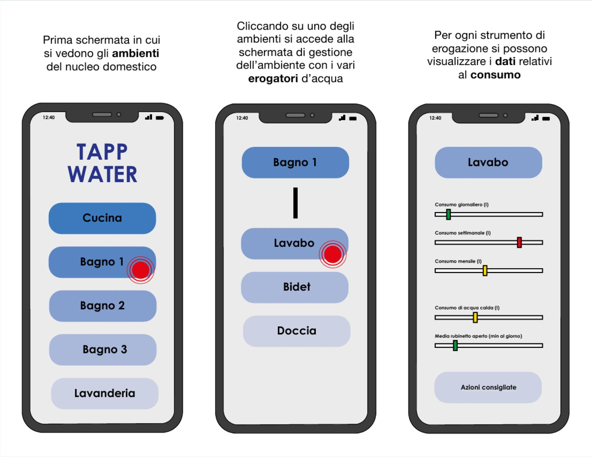
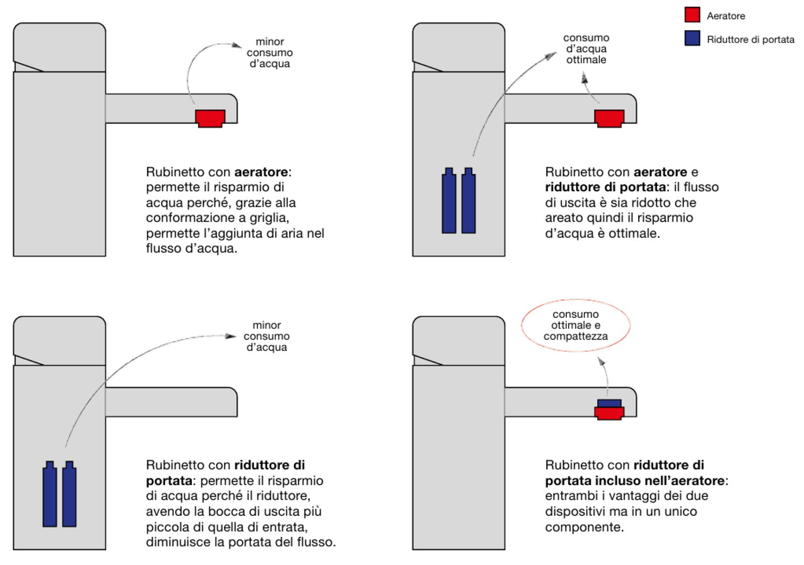
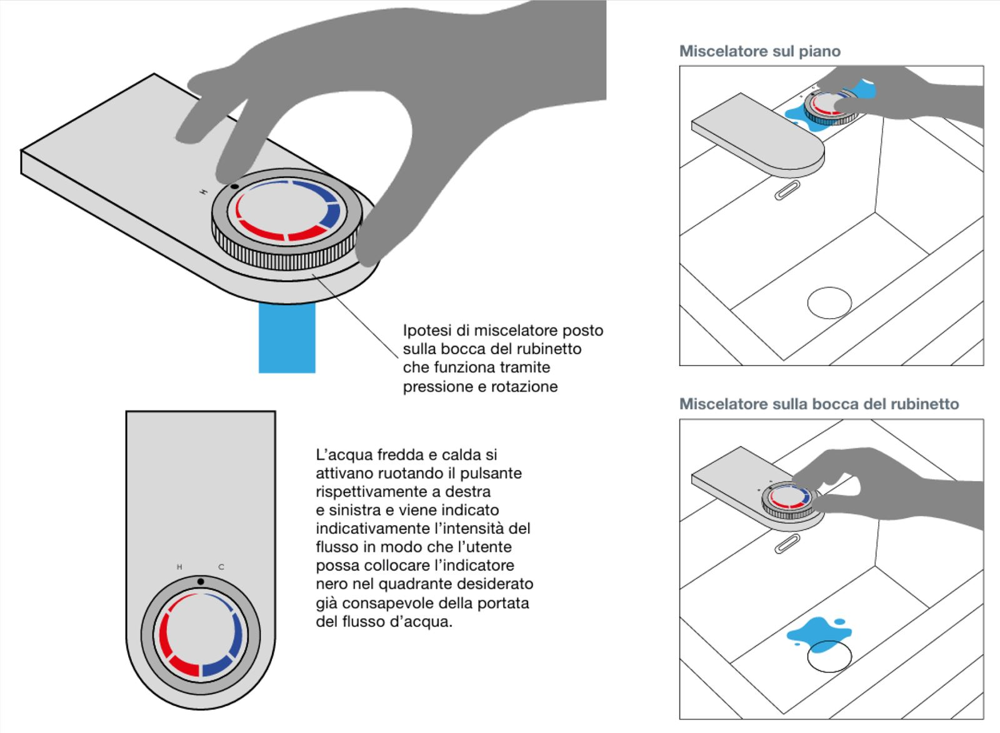
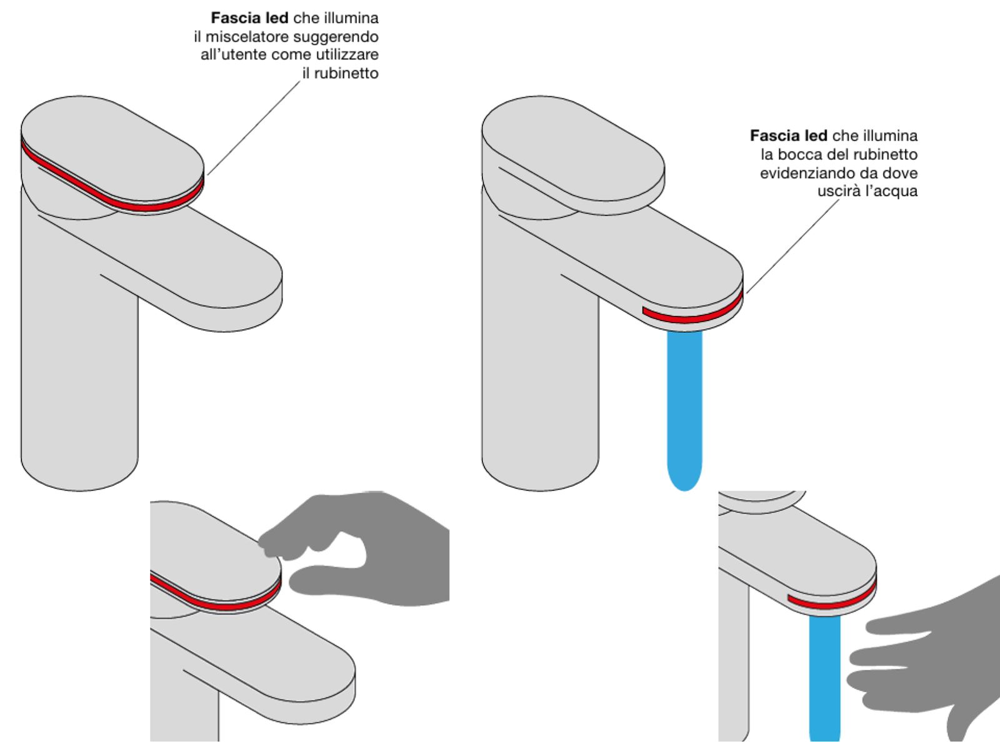
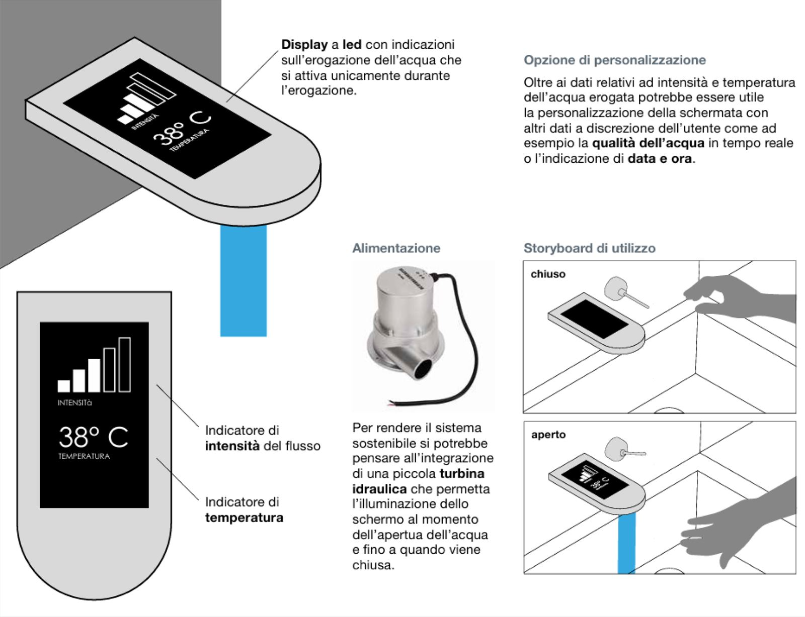
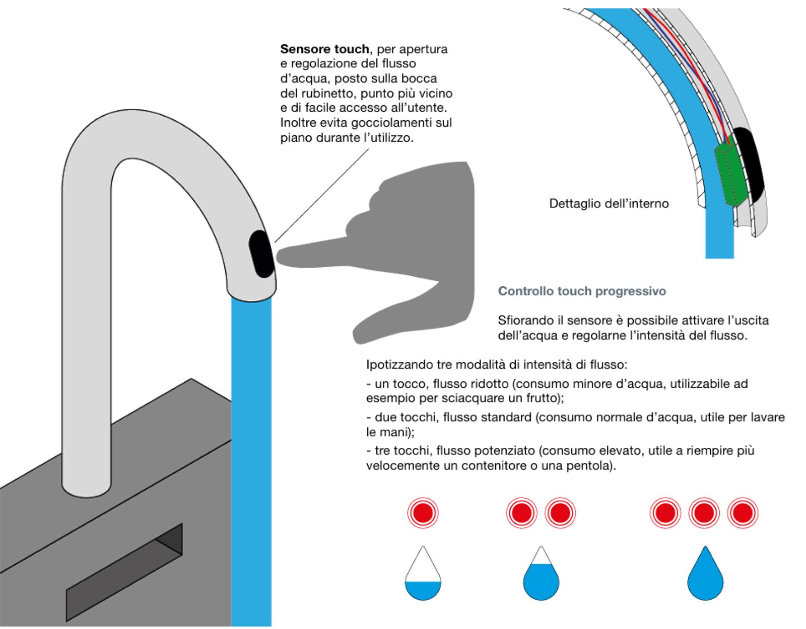

E se il rubinetto non fosse solo un oggetto tecnico, ma un punto di contatto tra acqua, spazio e persona?
290pagine di ricerca
8capitoli
6suggestioni progettuali
La tesi guarda la rubinetteria da una prospettiva più ampia: non solo materiali, tecnologie e prestazioni, ma gesti, abitudini e percezioni. Un settore quotidiano, poco interrogato dal punto di vista dell'esperienza.
Si parte dallo stato dell'arte e dal ruolo dell'acqua nel design e nell'architettura, poi si analizzano aziende, prodotti e soluzioni sul mercato. Il risultato sono linee guida per un rubinetto che dialoga con l'utente e rende più consapevole un gesto ordinario.
Prima del rubinetto, c'è l'acqua
Non solo come risorsa, ma come materia viva, simbolica e progettuale. Dall'antica Roma, dove l'acqua costruiva infrastrutture, rituali e benessere collettivo, fino ai giochi d'acqua dell'architettura contemporanea.
Lachlan Turczan, Studiopepe, Marco Piva, Jacopo Foggini, Renzo Piano, Carlo Scarpa e Tadao Ando mostrano come l'acqua possa emozionare e trasformare gli spazi. E poi i cinque sensi: cromoterapia, ionizzazione, suono, temperatura e gusto.

Il distretto
Nel Verbano Cusio Ossola, sul Lago d'Orta: da botteghe quasi domestiche a distretto industriale.
Il mercato
Italia, Europa e Stati Uniti a confronto, tra Made in Italy, precisione tedesca e lusso americano.
I casi studio
In cucina acqua filtrata, frizzante o bollente; in bagno nuovi gesti e luce; fuori docce free-standing.
La sostenibilità
Il distretto e le sue aziende di fronte ai requisiti ambientali.
I materiali
L'ottone della tradizione, l'acciaio inox più igienico e riciclabile.
Sei idee per il rubinetto di domani
Dopo storia, mercato, materiali e rapporto sensoriale con l'acqua, la domanda: come potrebbe essere il rubinetto del futuro?
Controllo dei consumi
Un'app collegata a rubinetti e docce mostra quanta acqua si usa, dove e quanto si potrebbe risparmiare. Delle sonde controllano la qualità dell'acqua e dicono se servono filtri.
L'obiettivo è culturale prima che tecnologico: rendere visibile uno spreco che di solito passa inosservato.

Aeratori e riduttori di portata
Oggi i rubinetti più efficienti arrivano a circa 5 o 6 litri al minuto. Il passo successivo è scendere ancora, senza togliere la sensazione di un getto pieno.
Non si chiede all'utente di cambiare abitudini: è il prodotto a rendere il comportamento sostenibile più semplice.

Il miscelatore vicino alla bocca
Si regola l'acqua con le mani bagnate, e il punto in cui si trova il comando decide dove cadranno le gocce. Vicino alla bocca, finiscono nel lavabo e non sul piano.
Niente tecnologia complessa: solo un gesto quotidiano ripensato con più attenzione.

L'uso della luce
Una fascia LED sul miscelatore dice dove toccare. Una sulla bocca mostra da dove uscirà l'acqua.
La luce migliora l'affordance: un oggetto che si fa capire da solo.

Un display integrato
Durante l'erogazione un piccolo display mostra temperatura e intensità del flusso. Una turbina idraulica lo alimenta solo quando l'acqua scorre.
E segnala quando si usa troppa acqua: il rubinetto informa, guida e sensibilizza.

Un tocco, tre flussi
Funziona come una lampada dimmerabile. Un sensore sulla bocca sostituisce leve e manopole. Un tocco per un flusso ridotto, due per quello standard, tre per riempire in fretta una pentola.
Più vicino ai gesti digitali a cui siamo già abituati.

Più umano, più consapevole
Il rubinetto del futuro tiene insieme funzione, tradizione e innovazione.